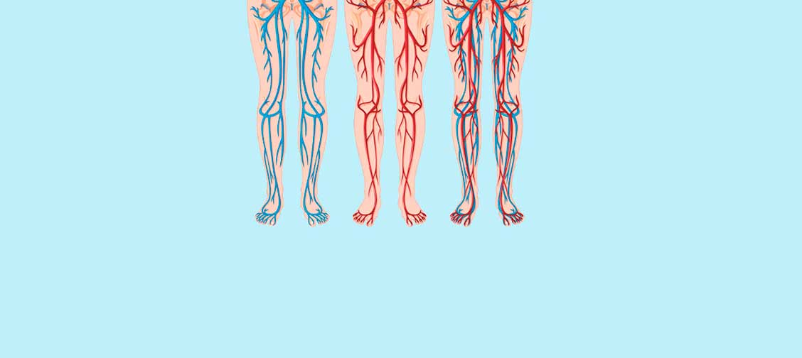

المقالات • مقابلات مع علماء •المقابلات
الوذمة وآلام العضلات والتشنجات: 3 مؤشرات مؤكدة لإنسداد الشرايين. كيف يمكنك تنظيف أوعيتك الدموية في المنزل؟
من هو ألد أعداء الكوليسترول والجلطات وأفضل صديق للأوردة؟
هل تنتفخ ساقيك في المساء؟ هل ينتفخ باطن قدميك ، أو لديك بقع على كاحليك؟ قد تكون هذه علامات على وجود انسداد في الأوردة ، أي السائل الذي يتراكم في جدران الأوردة المسدودة. تؤثر الوذمة بشكل سلبي على الدورة الدموية ، مما يسبب آلامًا في العضلات وتشنجات عضلية.
يعلم الجميع أن السكتات الدماغية والنوبات القلبية هي نتيجة انسداد الشرايين بالكوليسترول, أمراض القلب, الأوعية الدموية. ومع ذلك ، فإن القليل منهم يدركون أن هذا مجرد غيض من فيض. انسداد الأوعية الدموية هو سبب تسعة من كل 10 أمراض مزمنة يفترض أنها غير قابلة للشفاء.
يصيبك الصداع و التوتر. مفاصلك تؤلمك ، لا يمكنك تحمل وزنك ، بالكاد تستطيع أن تدير أو تثني عنقك. تنتفخ ساقيك في المساء ووجهك في الصباح. أذنيك ترن. تصبح يديك وأصابعك مخدرة. قدميك دائما باردة. يبدأ ضعف البصر. ذاكرتك تزداد سوءًا. لا يمكنك أن تجد الطاقة لفعل أي شيء. يصف الناس هذه الأعراض بأنها تقدم في السن ، لكن هذا ليس صحيحًا.
- لماذا الأوردة مسؤولة عن 90٪ من صحتك؟
- ما الأشياء الأخرى التي يتم تخزينها في جدران الأوعية الدموية بالإضافة إلى الكوليسترول؟
- 4 علامات واضحة و 7 علامات خفية للأوردة غير الصحية
- كيف يمكنك تنظيف اوعيتك الدموية بأمان في المنزل؟
حصلنا على إجابات لهذه الأسئلة من البروفيسور حسن خيرالله ، رئيس قسم جراحة الأوعية الدموية وجراحة الأعصاب في جامعة الطب والصيدلة في الجزائر.
أجرى الدكتور ,حسن, أكثر من 100 ألف عملية جراحية.هذا فقط ما تم الإعلان المفتوح حتى الآن. كان أصغر مريض رضيعًا يبلغ من العمر يومين.
يمتلك الدكتور.حسن خيرالله أيضًا موهبة في شرح العمليات الأكثر تعقيدًا بكلمات بسيطة يمكن للجميع فهمها. كتب 47 كتابًا ودليلًا صحيًا للأشخاص الذين لم يتلقوا تعليمًا طبيًا. إنه يعتقد أن عروقنا مسؤولة عن 90٪ من صحتنا وأن صحتنا العامة تعتمد على مدى نظافة عروقنا.
لماذا تمثل الأوردة 90٪ من صحتنا؟
عزيزي دكتور حسن ، لقد ذكرت مرات عديدة أن الأوردة في أجسامنا مسؤولة عن 90٪ من صحتنا. هل يمكنك شرح سبب ذلك؟
ما هو أكبر عضو في جسم الإنسان؟ قلة من الناس يعرفون الإجابة على هذا السؤال. حتى الأشخاص الذين تلقوا تدريبًا طبيًا يمكنهم أحيانًا الإجابة بشكل غير صحيح بقول الدماغ أو الكبد. حتي اكثرهم ذكاءاً قد يقول انه الجلد البشري. في الواقع ، الجزء الأكبر من جسم الإنسان هو نظام الأوعية الدموية.
يمكننا الإبحار حول العالم 2.5 مرة.
نعم طول الاوعية الدموية كافيًا لذلك !
حاول أن تتخيل. إذا أزلنا جميع الأوردة في جسم شخص واحد و ربطناها من طرف إلى آخر ، فسيكون طولها 100 ألف كيلومتر.
بعبارة أكثر بساطة ، يبلغ طول خط الاستواء 40 ألف كيلومتر. لذلك ، يمكن للحبل الصلب المتكون من عروق شخص واحد أن يلتف حول العالم مرتين ونصف.
ما رأيك في هذا الرقم؟
الأوردة ليست مجرد قنوات يتدفق الدم من خلالها. إنه عضو فريد ومعقد. أي اضطراب يسبب المرض في الجسم.
احتقان الأوردة في القدمين: توسع الأوردة ، تورم القدمين ، الشعور بالثقل ، الشعور بالصقيع في الساقين ، أو على العكس إحساس بالحرقان في باطن القدمين. تشققات في الكعب. اضطرابات الدورة الدموية: لا توجد حماية ضد البكتيريا ، يحدث مرض فطري. تتكاثف الأظافر .
انسداد الأوعية المغذية للكبد: تنكس دهني كبدي. عند تناول الأطعمة الدهنية فإنها تترك طعمًا مرًا في الفم .
ضعف وانسداد الأوعية في المفاصل: يجف النسيج الغضروفي. تبدأ المفاصل في الشعور بالألم ، ويحدث تنخر العظم والفتق.
تفقد أوعية الأمعاء مرونتها: تتشكل مشاكل البواسير.
أوردة في العيون: تقل القدرة على الرؤية. يحدث الساد. احمرار العين ، الذي يعتقد الجميع أنه ناتج عن التعب ، هو في الواقع نزيف صغير في الشعيرات الدموية في العين.
اضطراب الدورة الدموية في الدماغ: الدوخة وطنين الأذن وتراجع الذاكرة. هل سبق لك أن دخلت المطبخ ونسيت لماذا ذهبت؟ أو أنك لا تستطيع تذكر كلمة واحدة. كل هذه علامات تدل على تدهور الأوعية الدماغية.
وينبغي إضافة ارتفاع ضغط الدم إلى هذه القائمة. ارتفاع ضغط الدم هي المسؤول الرئيسي عن السكتات الدماغية وشقيقة النوبة القلبية.
الأوردة هي مصدر طاقتنا ، وتتدفق قوة الحياة من خلالها. إذا تم حظر تقاطع مهم ، تتوقف الحياة.
الأوردة المسدودة: تتضور جميع الأعضاء جوعًا
زيادة الوزن تؤثر بشكل مباشر على الأوردة. أعضائنا تتضور جوعًا بسبب الأوردة المسدودة بسبب الكوليسترول ، لأنها لا تستطيع الوصول إلى العناصر الغذائية الضرورية. يرسل الدماغ رسالة أنت بحاجة لتناول الطعام. يأكل الشخص. ومع ذلك ، لا يمكن للأعضاء تلقي ما يكفي من العناصر الغذائية بسبب انسداد الأوعية. يرسل لك الدماغ رسالة لتأكلها ، وتستمر هذه الحلقة المفرغة على هذا النحو.
هذا هو المكان الذي تأتي منه الرغبة في تناول الطعام ، الرغبة في تناول الحلويات والمعجنات. جسمك يحتاج إلى سعرات حرارية.
عندما يقول زملائي لمرضاهم ، لديك ارتفاع في ضغط الدم بسبب وزنك ، يخلط المرضى بين السبب والنتيجة. لا ينتج ارتفاع ضغط الدم عن زيادة الوزن ، بل على العكس تمامًا.
لم يُقال عبثًا أن كل شيء يبدأ بالصحة ، ولكن يجب أن نضيف: لا يمكننا أن نكون بصحة جيدة دون الحفاظ على عروقنا نظيفة.
لهذا السبب أقول دائمًا نفس الشيء: إذا كنت تريد أن تعيش حياة طبيعية ، فأنت بحاجة إلى الحفاظ على صحة عروقك. تحميك بنية الأوعية الدموية النظيفة من 90٪ من الأمراض المزمنة ، بعضها غير قابل للشفاء.
ما يسد الشرايين غير الكولسترول؟
نعلم جميعًا مدى خطورة الكوليسترول. يسد الأوردة ويضيق الممرات وبالتالي يمنع الدورة الدموية. ومع ذلك ، فإن الكوليسترول ليس هو الشيء الوحيد الذي يسبب هذه النتيجة.
6.1 كجم هو الوزن الإجمالي للتلوث المتراكم في عروق الإنسان عند بلوغه سن الخمسين..
انها حقيقة. لويحات الكوليسترول ، أو لويحات تصلب الشرايين كما يطلق عليها طبيا ، هي سبب ما يقرب من 65-70٪ من اضطرابات الأوعية الدموية.
عندما يبلغ كل شخص سن الخمسين يتراكم ما يصل إلى 5 كيلوغرامات من طبقة الكوليسترول. يؤدي تراكم الكوليسترول إلى تضييق تجويف الأوعية (أي المساحة التي يتدفق الدم من خلالها) 4-5 مرات.
حاول أن تتخيل. إذا إفترضنا ان سماكة الأوعية الدموية للشخص كإصبع ، فإن المساحة التي يمكن أن يمر الدم من خلالها في الوريد المسدود بمقدار 5 كيلوغرامات من الكوليسترول ستكون سميكة مثل 4 أعواد الثقاب.
قد لا تكون هذه اللويحات مهددة للحياة ، لكن جودة الحياة تنخفض ، ويرتفع ضغط الدم ، ويبدأ الصداع ، وآلام الظهر ، والتنميل. تكون الجلطة التي تتراكم في الأوردة أكثر خطورة.
وزن الجلطة المتراكمة في الأوردة أقل بكثير فقط ما بين 800 جرام - 1 كجم . لكنها خطيرة للغاية بسبب بنيتها غير المستقرة. يمكن أن تنفصل الجلطة (الجلطة التي تسد الوريد) من جدار الأوعية الدموية الذي تتصل به في أي وقت وتبدأ في البحث عن ضحية.
يمكن لقطع كبيرة من الجلطة أن تسد وريد الضحية تمامًا. في مثل هذه الحالة ، يحدث نقص التروية ، أي عدم قدرة الأنسجة على تلقي كمية كافية من الدم..
شلل نقص التروية هو انسداد الأوعية الدموية الدماغية. النوبة القلبية هي انسداد في الأوعية الدموية للقلب. هذا هو السبب في حدوث نقص التروية في الكبد وفشل الرئة والفشل الكلوي. البواسير هي حالة من نقص التروية تحدث في نهاية الأمعاء الغليظة. يمكن أيضاً أن يؤدي انسداد الشعيرات الدموية في القدم إلى النخر (الغرغرينا).
تتسبب المخلفات الكيميائية للمكملات الغذائية والأدوية في ترسب ملح الكالسيوم في الأوردة. خلال حياة الإنسان ، يتراكم 300-400 جرام في 50 عامًا. تتراكم أملاح الكالسيوم في الأوعية الدماغية أكثر من غيرها.
هذه خطيرة بسبب تركيبتها البلورية. إنها تضيق الأوعية ويمكن أن تؤدي حوافها البلورية الحادة إلى ثقب الوعاء إذا تشنجات الأوعية الدموية بسبب الإجهاد أو النشاط البدني أو التغير في الطقس. يُعرف انثقاب الوعاء الدماغي بالسكتة الدماغية النزفية.
4 علامات واضحة و 7 علامات خفية على بنية الأوعية الدموية غير الصحية
ما هي الأعراض التي تدل على انسداد عروقنا؟ كيف نفهم الرسالة التي يبعثها جسدنا (نظف عروقك الآن) ؟
إذا كان عمرك يزيد عن 45 عامًا ولم تستخدم أبدًا المغذيات لتنظيف عروقك ، فأنا أقول إن لديك مشكلة.
45
العمر هو نقطة التحول لتنظيف عروقك
انسداد الشرايين بسبب الكوليسترول والجلطات هو نتيجة طبيعية لعملية الشيخوخة. اليوم ، تزيد الأطعمة والمخدرات والتدخين والكحول من هذه العملية. هذه هي حقيقة العالم الذي نعيش فيه اليوم ولا يمكن إنكارها..
أهم أعراض تلوث الأوردة
إذا تم تشخيصك بارتفاع ضغط الدم ، يمكنك التوقف عن قراءة هذا المقال لأنه ملك أمراض الأوعية الدموية.
هل تشكو من عدم استقرار بضغط الدم؟ هل تعاني من ارتفاع ضغط الدم وتحتاج إلى تناول أدوية ضغط الدم بانتظام؟ إذا كانت إجابتك على هذه الأسئلة بنعم ، فهذا يعني أن هناك مساحة خالية بنسبة 30 ٪ متبقية في عروقك حيث يمكن أن تحدث الدورة الدموية. تمتلئ بقية عروقك بلويحات الكوليسترول والجلطات الدموية وأملاح الكالسيوم.
لذا فإن أدنى إجهاد أو تغيير في الظروف الجوية أو عاصفة مغناطيسية ستؤثر على صحتك على الفور. في هذه الحالة ، يرتفع ضغط الدم ، و يبدأ ألم في مفاصلك.
4 أمراض تسببها الأوردة المسدودة
- 1. ارتفاع ضغط الدم يجب عليك تثبيت أو خفض ضغط الدم غير المستقر أو المرتفع عن طريق تناول الأدوية. يجب الانتباه إلى الأعراض الرئيسية. هل تم تشخيصك بارتفاع ضغط الدم؟ إذاً حان الوقت لتنظيف عروقك.
- 2. تظهر الدوالي (الدوالي) كأوردة قبيحة ومنتفخة على الساقين. تعطي الشعور بالثقل والألم والوذمة. تسد مخلفات الكوليسترول والجلطات الصمامات الوريدية. بمرور الوقت ، تتشكل نجوم الدوالي وتتخذ بنية مثل شبكة العنكبوت. هذه هي الطريقة التي تتشكل بها عروق البرميل.
- 3. Hemoroit (البواسير) يؤدي انسداد الأوردة في المستقيم إلى تضخم مشاكل الباسور. تزيد الرواسب في الأوعية الدموية من التشققات في فتحة الشرج.
- 4. تنخر العظم (تكلس) يحدث بسبب عدم كفاية الدورة الدموية في الغضاريف. يصلب الغضروف ويصبح غير قادر على العمل. ليس لديهم الوقت للتعافي. نظرًا لعدم تجديدها ، فإنها تجف. يفقدون وظيفة الترطيب. لا يتم تنظيف الأملاح وتبدأ في التراكم دون حسيب ولا رقيب.
7 أعراض خفية
- 1. الوذمة لا تستطيع الأوردة المسدودة ضخ الماء من الجسم. اضطراب توازن الماء المالح في الجسم. في المساء ، تنتفخ القدمين ، وتترك الجوارب علامات سميكة وعميقة على الكاحلين. تورم في الوجه ، وتحدث أكياس تحت الجلد. لم يعد بإمكانك إزالة الخاتم الموجود على إصبعك. التورم في البطن هو علامة على تورم الأعضاء الداخلية.
- 2. طنين الأذن الأصوات التي بدأت ناعمة في البداية وتزداد بمرور الوقت تمنعك من التركيز. سبب هذه الأصوات هو ارتفاع ضغط الدم في الأوعية الدماغية التي تضغط على طبلة الأذن.
- 3. الدوخة يشعر الشخص كما لو أنه مخمور. الدوخة المفاجئة هي علامة على أن الاوعية الدموية لا تعمل بشكل جيد.
- 4. الأرق ألا تشعر بالنعاس وفقدان الطاقة ولكنك غير قادر على النوم قبل منتصف الليل؟ هذا بسبب عدم وصول كمية كافية من الدم إلى الغدد النخامية. وهذا بدوره يعطل إنتاج هرمون النوم الميلاتونين.
- 5. قلة القوة تشعر أنه لم يعد لديك قوة متبقية. روحك لا تريد أن تفعل أي شيء. كل ما تريده هو البقاء خارج السرير وتناول الطعام. يحدث هذا عندما يبدأ الجسم في الحفاظ على الطاقة. لا تستطيع الأوردة أن تحمل العناصر الغذائية الضرورية للأعضاء ، لذلك يقلل الجسم من أنشطته من أجل البقاء على قيد الحياة.
- 6. اضطرابات بصرية اتشعر انه أشياءاً كالذباب الصغير تطير أمام عينيك. هذه هي علامات أوعية العدسة.
- 7. ألم المفاصل تحدث آلام المفاصل عندما يتغير الطقس. بدلًا من الاستيقاظ في الصباح مستريحًا ، يشعر الشخص بالشلل تقريبًا. يتحدث عن عظامه تؤلمه. وذلك لأن سائل المفصل يفقد خصائصه.
هل لديك اي من هذه الأعراض؟ إذا كانت إجابتك نعم ، فإن مفاصلك تخبرك أن الوقت قد حان لتنظيف عروقك.
غالبًا ما يكون لدى الأشخاص العديد من هذه الأعراض في نفس الوقت. في بعض الأحيان يمكن رؤيتها في شخص واحد.
يحاول المرضى علاج كل مرض على حدة. يستخدمون أدوية ضغط الدم ، ومرهم لتوسع الأوردة . وبالطبع يأخذون الكثير من مسكنات الألم ...
لذلك فإنهم ينفقون الكثير من المال على {المسكنات}. لكن لأمراض الأوعية الدموية سبب واحد فقط: الاحتقان. هنا ، من الضروري البدء في التنظيف العام لجهاز الأوعية الدموية.
إذن ، ما الذي يجب أن تستخدمه لتنظيف الكوليسترول والجلطات ورواسب الملح في الأوردة؟
يرجى تقديم اقتراحك المهني. على سبيل المثال ، تعاني مديحة داوود ، 57 عامًا ، التي تعيش في الجزائر، من زيادة الوزن وارتفاع ضغط الدم والدوالي. يمكن أن تشعر مديحة بأدنى تغيير في الطقس كمقياس لأن مفاصلها تبدأ في الشعور بالألم. و تشعر بصداع ودوخة وإرهاق.
كيف يمكننا مساعدة السيدة مديحة ؟ كيف تنظف عروقها ؟ لا تريد أن تذهب إلى الطبيب وتسمع عبارات مثل أنت بحاجة إلى إنقاص الوزن ، أنت بحاجة لممارسة الرياضة ، أنت بحاجة لتناول طعام صحي ، أنت بحاجة إلى أن تعيش بحذر أكبر في هذا العمر.
معظم المنتجات الطبية والصيدلانية لا تفعل شيئًا سوى التأكد من نفاد الأموال في حساباتنا المصرفية ونصبح معتمدين على الأدوية.
لسوء الحظ ، هذه هي الطريقة التي يعمل بها النظام الصحي في الجزائر. أتفهم إصرار المرضى على عدم الذهاب إلى الطبيب. حسنًا ، هل تستطيع السيدة مديحة الاستغناء عن الطبيب؟
لا يوجد سوى منتج واحد يمكنني قوله للتنظيف الآمن للأوردة.
Cordis إنه يُطيل عمر الإنسان بمقدار 11-17 عامًا. يمنحك شعورًا بالطاقة والاسترخاء ، ويخفف من العذاب ولا يضيع حتى أصغر جزء من قوتك.
إنه غير ضار لأنه منتج مصنوع من الأعشاب الطبية. وهو ثاني أكثر منتجات تطهير الأوعية الدموية استخدامًا. التدخل الجراحي في المقام الأول. فإنه لا يسبب أي مضاعفات أو له آثار جانبية. من الشرايين السميكة إلى الشعيرات الدموية الرقيقة والأنحف
Cordis يتكون من مزيج من المستخلصات النباتية وعندما يتلامس مع الماء ، فإنه ينشط الجزيئات الحية.
هذه المنظفات الدقيقة تزيل الكوليسترول والجلطات ولويحات الكالسيوم وبقايا الأدوية الملتصقة بجدران الاوعية الدموية . بمعنى آخر ، ينظف كل شيء و ينشط الدورة الدموية.
يتم تنظيف جميع الأوساخ التي تراكمت على مر السنين وسممت حياتك عن طريق Cordis في غضون 1.5 إلى شهرين فقط من إستخدامه.
Cordis يذوب 4 كيلو من لوحيات الكوليسترول في 6 أسابيع فقط. يخفف كتلة الجلطة بين 900 جرام و 1 كيلوجرام ، ويغسل كلوريد الكالسيوم بين 350-400 جرام.
بهذه الطريقة ، لن تعاني من الصداع وطنين الأذن. يبدأ الدماغ في الحصول على العناصر الغذائية الكافية ويعمل بسرعة الكمبيوتر الفائق. تصبح الأفكار واضحة.
تشتد المشاعر ، تبدأ في سماع أصوات هادئة لم تسمعها من قبل. يتحسن حاسة السمع لديك ، ويمكنك حتى متابعة المحادثة في الغرفة المجاورة التي لم تسمعها من قبل.
حاسة الشم تكتسب ألوانًا جديدة. ينتهي احتقان الأنف. لن يكون لديك التهاب الأنف الداخلي المزمن وشكاوى الحساسية. يتم تصحيح القصبات الهوائية. يصبح التنفس أسهل. ينتشر الهواء النقي الذي يملأ الرئتين إلى الجسم كله ، مما يخلق شعوراً بالسعادة.
يتم تقوية حاسة التذوق وتعميقها. تبدأ في الاستمتاع بالطعام العادي أكثر. تأكل أقل وتشعر بالشبع. ينتهي شغفك للأطعمة الحلوة والدسمة.
تستعيد قوة مفاصلك . يزول الألم المستمر. فهي لا تتشقق ويسهل تحريكها بفضل عودة سائل المفصل. إنه مثل تغيير الزيت في السيارة. من خلال استبدال زيت القار المحروق والمتقادم بزيت نظيف وطازج ، ستضمن أن كل مكون يعمل بشكل مريح.
مذهل ! قبل Cordis لم أسمع أي شيء عن المكملات الغذائية. كان لدي معرفة عامة بالمغذيات. في اليابان والصين ، تعتبر المغذيات المساعد الرئيسي. ومع ذلك ، لا يزال يُنظر إلى هذه المنتجات بعين الريبة في الجزائر.
أنا متأكد من أن السيدة مديحة قد استخدمت المئات من المكملات الغذائية والأدوية لتجنب إنفاق الأموال على المنتجات المعجزة ذات السمعة المشكوك فيها.
شكوكنا تخوننا. يجعلنا الخوف نفقد ما يمكننا تحقيقه.
دعني أخبرك قصة عن نقص الثقة بالنفس.
في عام 1928 ، تم اختراع أول مضاد حيوي: البنسلين. عالج هذا المضاد الحيوي الزحار وحمى التيفوئيد التي قتلت العديد من الأشخاص لسنوات.
ومع ذلك ، لم يعتقد معظم الناس أن البنسلين سيساعدهم لأنهم استخدموا آلاف العلاجات غير المجدية من قبل. لكن أولئك الذين عانوا من آلاف الإخفاقات و لا يخشون المحاولة (يشفون)! . اعتقدت المجموعة الأولى من المرضى إنه مضاد حيوي آخر غير مفيد ودفعوا حياتهم ثمنا. ومع ذلك ، فإن الحل الذي سيمكنهم من التعافي كان حقًا امام اعينهم.
Cordis يقضي على أمراض الأوعية الدموية ، تمامًا كما يقضي البنسلين على الزحار وحمى التيفود والطاعون. في كوريا واليابان وكندا وسويسرا ، وإسرائيل ، هذا وقد تم اتخاذ الخطوات الأولى في هذا الاتجاه. تم وضع إطار قانوني في هذه المبادئ. تقرر استخدام المغذيات قبل التدخل الجراحي الطبي في تنظيف الأوعية.
أوافق ، الشك هو العدو الأكبر. أنا شخصياً لا أخشى تجربة أشياء جديدة.
الآن دعنا نتخيل أنني أشتري Cordis ، افتح الصندوق وأخرج الزجاجة وقم بتناول كبسولة مع كل وجبة مع كوب من الماء ... ثم ماذا يحدث؟ Cordis يعمل؟
تأثير البيروكسيد (الأوكسجين): بفضل التخصيب بالأكسجين ، يتم تسريع امتصاص الجزيئات.
المستخلصات الطبية المخصبة بالماء والأكسجين تكتسب خصائص البيروكسيد: الأكسجين.
في الواقع ، الجزيئات في Cordis تشبه قنابل الأكسجين. إنها تنفجر لويحات الكوليسترول في الشرايين وتفسح المجال للدورة الدموية.
يسمح تأثير البيروكسيد باستيعاب الجزيئات الحية على الفور. يمتص المريء المستخلصات النباتية المخصبة بالأكسجين بسهولة. وبهذه الطريقة ، لا يسبب Cordis الشعور بالحرقة أو الطعم المر أو تكوين الغازات في المعدة ولا يجبر الأمعاء ويحمي المعدة. المرضى الذين يعانون من قرحة في المعدة. Cordis ليس له آثار جانبية.
إنه كنز يحتوي على خلاصات علاجية تعمل بتناغم لضمان نقاء ومقاومة الأوردة.
Cordis يفتح الانسدادات التي يسببها الكوليسترول. تعمل جزيئات Cordis مثل المطارق لرفع جزيئات الكوليسترول المرتبطة بالجدار الداخلي للأوعية. هذا يفتح الطريق للدورة الدموية. تبدأ الأعضاء في شرب طعامهم. تنبض الغضاريف التي تتلقى الأكسجين والماء بالحياة ويتم تفعيل آلية الشفاء الأوتوماتيكية. عودة المرونة. يختفي الصوت عند تحريك العنق. عندما يتغير الطقس ، يتم تخفيف الألم في الركبتين والأصابع.
الوذمة تختفي. حتى لو وقف الشخص طوال اليوم ، لم يعد هناك تورم في الساقين.
تتحسن الدورة الدموية في الجلد. تختفي الأوردة التي تشبه شبكات العنكبوت ويمكن رؤيتها من الخارج. تذهب دوالي الأوردة وتخفي مشاكل البواسير بمرور الوقت.
Cordis يحل مشكلتين: يزيل بقايا الكوليسترول ويضمن حرق الدهون بشكل صحيح. بعد استخدام المنتج ، تبدأ في الشعور بالقوة والحاجة إلى التحرك. تعتقد أنه يمكنك تحريك الجبال.
تدور جزيئات Cordis عبر الأوردة بحثًا عن جلطات دموية. يحسن الدورة الدموية . يقوم بتفتيت الجلطات وحتى تمدد الأوعية الدموية الصغيرة. يغسل رواسب ملح الكالسيوم وبقايا الأدوية المتراكمة في الأوردة.
يتم التخلص من الضغط الذي تشعر به في صدرك ، يمكنك التنفس بسهولة أكبر. يعود نبض القلب إلى مستواه الطبيعي. لن يكون لديك شكاوى من عدم انتظام ضربات القلب وعدم انتظام دقات القلب. الآلام التي تضرب قلبك فجأة تختفي.
يتم تقليل خطر الإصابة بنوبة قلبية إلى الصفر.
كبسولات Cordis تصلح جدران الأوردة. جزيئات كبسولات Cordis تغلق الشقوق الصغيرة مثل الرقعة. الدماغ محمي بشكل صحيح من السكتة الدماغية. تبدأ الخلايا في تلقي العناصر الغذائية والأكسجين.
تاثير الفراشة
Cordis إنه مثل خفقان أجنحة الفراشة ويسبب سلسلة من الأحداث التي يصعب تصديقها. بدأت الدراسة بتنظيف الرواسب المتراكمة على مر السنين من الأوردة.
في نهاية شهر واحد من العلاج مع Cordis ، ستشعر بأنك ولدت من جديد.
تستيقظ في الصباح وتنهض من السرير دون صعوبة. ليس عليك الانتظار حتى تتعافى ساقيك وظهرك ورقبتك.
يصبح الجسم ممتلئًا بالقوة والطاقة في الصباح ، لأن الأوردة الآن أصبحت نظيفة وتمكنت جميع الأعضاء من الحصول على الطعام والأكسجين الذي تحتاجه طوال الليل. يتم تزويد كل جزء من أجزاء الجسم بالكمية المناسبة من الدم التي توفر القوة اللازمة ليوم جديد.
لتناول الإفطار ، تأكل خبزك مغموسًا في بيضة مع نقانق. سوف تتقبله معدتك بسهولة. لم يعد هناك ألم في معدتك ولا يوجد ألم لا يزول. Cordis ينظف الأوعية التي تغذي المعدة. إذا ابتلعت حجرًا ، فهو قوي بما يكفي للهضم.
لا داعي للقلق بشأن قدميك عند مغادرة المنزل. حتى لو مشيت طوال اليوم ، فلن يسببوا مشاكل ، ولن يتعبوا وينتفخوا. لم يعد حذائك وجواربك تترك علامات على قدميك.
تشعر بالراحة والهدوء. ذهب الألم المستمر الذي يطمس وعيك ويمنعك من التركيز. نظرًا لأنك لم تعد تشعر بالألم ، فإن الأصوات والروائح التي اعتدت عليها تشعر بها بشكل أقوى.
حتى في نهاية يوم العمل الحافل ، ستعود إلى المنزل بعقل متفتح. عقلك الآن يدق مثل الساعة. لن تشعر بالتعب.
بمجرد أن يضرب رأسك الوسادة ، تبدأ في النوم. كما في الماضي ، ليس هناك أي أثر للرجوع للخلف وللأمام في السرير دون النوم لساعات. الآن أصبح النوم أسهل بكثير. أنت من تقرر متى تنام ويتكيف جسمك معها.
برنامج عجز السوق والخصم
-Cordis اختفى من السوق وغير متوفر في اي صيدلية. لماذا ا؟
للأسف ما قلته صحيح. منذ بداية هذا العام ، لم يعد منتج Cordis متاحًا في الصيدليات.
المشكلة تنبع من جشع شركات الأدوية. طالبت هذه الشركات بدفع مبلغ لمصنع Cordis عن كل طرد يتم بيعه. طلبت الشركات إضافة هذا المبلغ إلى السعر عند طرح المنتج في الصيدليات (بلغ سعر Cordis مستوى 108.000 DA في بعض الصيدليات في الجزائر).
وفقًا لممثلي الشركات ، استند طلبهم إلى أسباب معقولة. بهذه الطريقة ، يمكنهم متابعة أنشطتهم. Cordis مكمل غذائي سيحتاجه المرضى كل 7 إلى 10 سنوات . علاوة على ذلك ، بعد تنظيف الأوردة باستخدام Cordis ، لا يحتاج المرضى إلى المنتجات الطبية التي كانوا يستخدمونها بانتظام من قبل. لا يتعين على أي شخص تناول مكمل غذائي لخفض ضغط الدم أو تخفيف آلام المفاصل. انخفض الطلب على أدوية الربو والسكري بشكل كبير. بطبيعة الحال ، هذا يعني خسارة مالية ضخمة لشركات الأدوية. لهذا السبب أرادوا وضع هامش ربح كبير على سعر بيع Cordis .
نتيجة لذلك ، ألغت الشركة المصنعة لـ Cordis العقد مع الصيدليات وتحولت إلى المبيعات عبر الإنترنت تمامًا. في الواقع ، هذا هو أفضل قرار. لا داعي للقلق بشأن دفع الإيجار أو الكفاح من أجل الحصول على مساحة تخزين في الصيدليات. لذلك ، أصبح Cordis في متناول الجميع بشكل أكبر مقارنةً ببيعه في الصيدليات.
“ لعروق نظيفة” برنامج الخصم
بدأ معهدنا برنامج خصم ضمن نطاق مشروع الطب عن بعد (الطب عبر الإنترنت) من خلال التعاون مع جامعة الطب والصيدلة في الجزائر ، وشركات الشحن Cordis الشركة المصنعة.
يمكن لأي شخص مشارك في البرنامج الحصول على Cordis .
ماذا علي أن أفعل للانضمام إلى البرنامج؟
يجب على من يرغب في طلب Cordis ضمن برنامج الخصم استيفاء الشروط التالية:
شروط الإنضمام لبرنامج الخصم للحصول علي Cordis
- يجب أن يشتري الشخص منتج Cordis لأغراض شخصية يجب أن يكون الشخص الذي طلب المنتج والمشتري هو نفس الشخص. بهذه الطريقة ، يتم محاولة منع شركات السمسرة من شراء وبيع Cordis للآخرين عن طريق إضافة هامش ربح عليه.
- يجب تقديم الطلب باستخدام النموذج الرسمي للبرنامج استخدام النموذج الرسمي في طلبك يسمح لك بالشراء بسعر الشركة المصنعة ويحميك من الوسطاء.
إلى متى سيستمر برنامج الخصم؟
سيستمر البرنامج حتى نفاد مخزون Cordis . نُقدر أن لدينا مخزونًا كافيًا يدوم 3-4 أسابيع. على الرغم من عدم وجود إعلانات ، فإن أولئك الذين استعادوا صحتهم باستخدام هذا المكمل غذائي يخبرون أصدقائهم. لقد كانت مفاجأة لنا أن مخزوننا من Cordis ينفذ بسرعة كبيرة. برنامج الخصم حتي تاريخ
(ضمناً).
لهذا السبب أقترح عليك تقديم طلب Cordis في أقرب وقت ممكن. ليس من المخطط أن يتكرر البرنامج هذا العام.

للحصول على Cordis أدخل اسمك ورقم هاتف الاتصال في الحقول أدناه وانقر فوق الزر "اطلب Cordis".

التعليقات